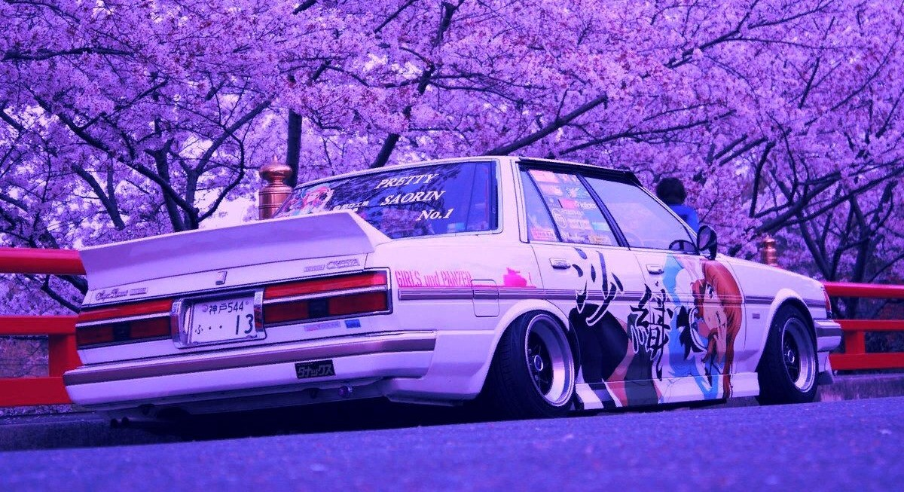
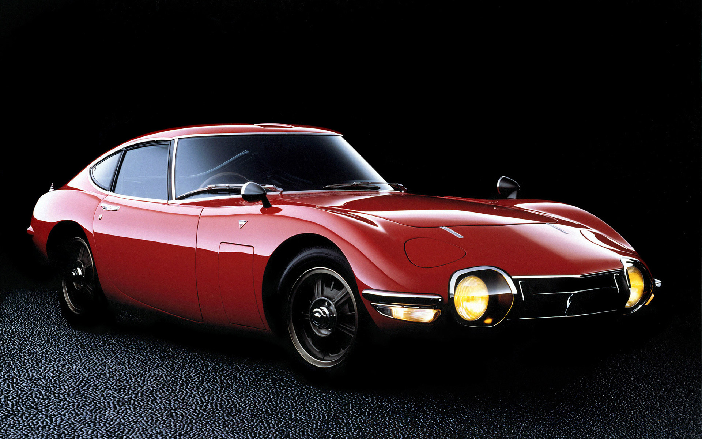
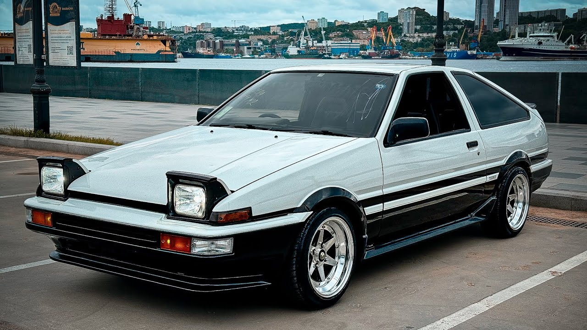
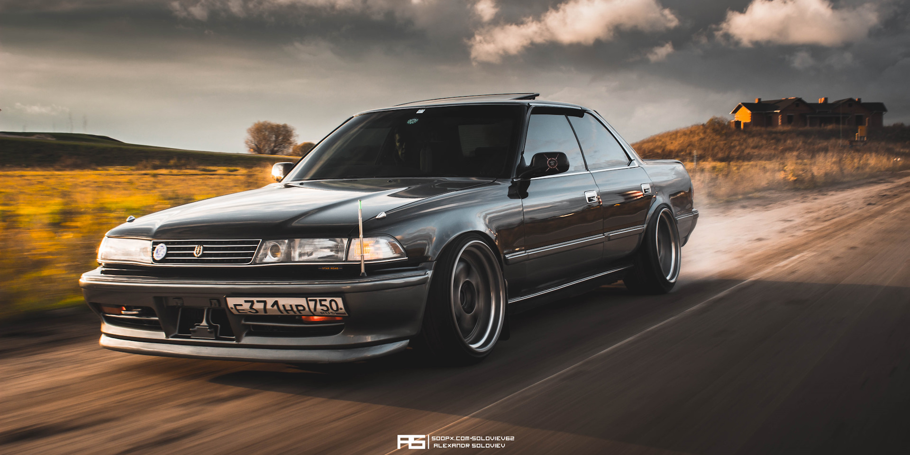
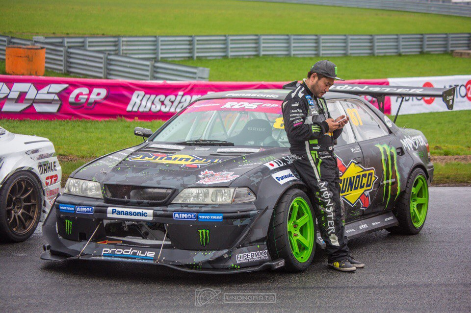
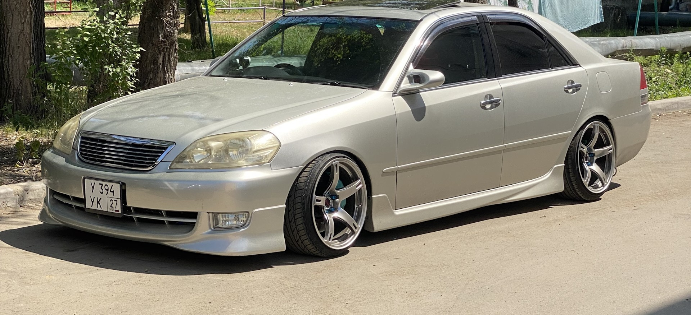
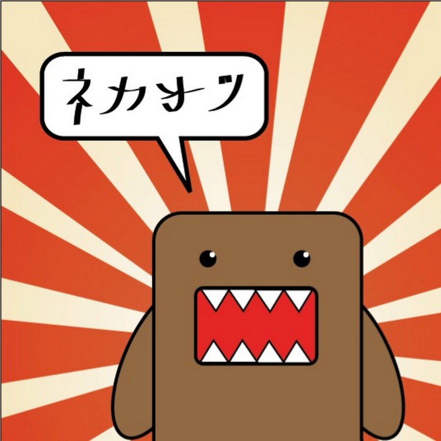
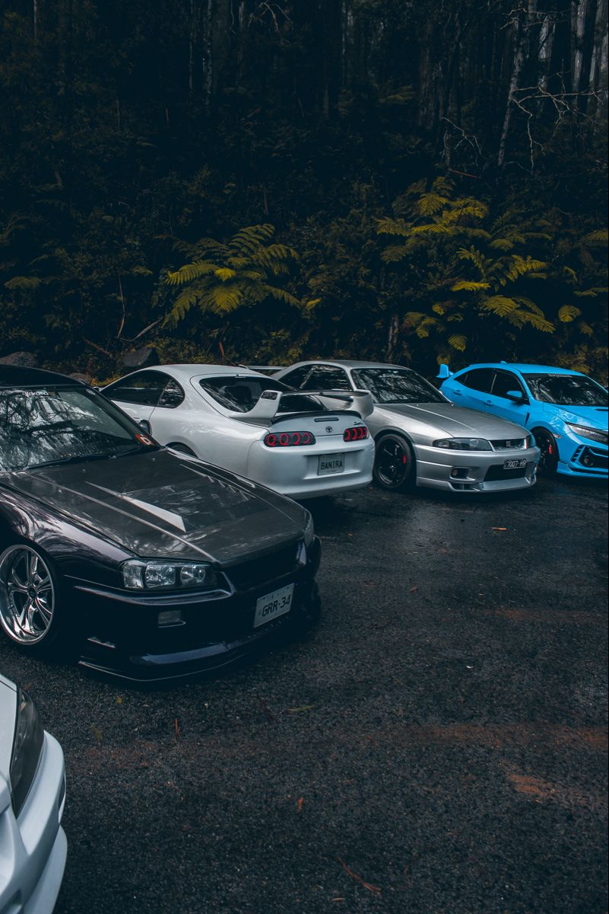

ЧТО ТАКОЕ JDM?
JDM — сокращение от Japanese Domestic Market, то есть японский внутренний рынок. Изначально термин относится к автомобилям и автомобильным деталям, предназначенным именно для продажи в Японии.
Такие автомобили могли заметно отличаться от экспортных версий. Японские производители создавали отдельные комплектации, двигатели, кузова и технические решения специально для внутреннего рынка.
Со временем слово JDM стало использоваться гораздо шире. За пределами Японии им часто называют японские автомобили и целую автомобильную культуру, связанную с тюнингом, дрифтом, уличными гонками и импортом японских машин.

1960–1970-Е — НАЧАЛО ЯПОНСКОЙ АВТОМОБИЛЬНОЙ ЭПОХИ
После Второй мировой войны японская автомобильная промышленность начала быстро развиваться. Toyota, Nissan, Honda, Mazda, Mitsubishi и другие компании постепенно превратились в крупных производителей.
В этот период японские компании начали создавать собственные спортивные автомобили. Появлялись модели, которые сочетали относительно небольшую массу, компактные размеры и достаточно мощные двигатели.
Одним из важных направлений стало создание небольших спортивных автомобилей, предназначенных для японских дорог. Именно эта философия позже станет одной из особенностей JDM.

1980-Е — ЗОЛОТОЕ ПОКОЛЕНИЕ
В 1980-х японская автомобильная промышленность вышла на новый уровень. Производители начали активно экспериментировать с турбонаддувом, полным приводом, электронными системами управления и новыми технологиями.
В этот период появились легендарные семейства автомобилей, которые впоследствии стали основой современной JDM-культуры.
- Nissan Skyline GT-R
- Toyota Mark II
- Toyota Supra
- Mazda RX-7
- Toyota AE86
- Mitsubishi Lancer Evolution
- Subaru Impreza

Особое место занимал автоспорт. Ралли, кольцевые гонки и другие дисциплины позволяли производителям испытывать новые технологии, которые затем появлялись на серийных автомобилях.
1988 — «GENTLEMEN'S AGREEMENT»
Одним из наиболее известных эпизодов истории японских спортивных автомобилей стало добровольное ограничение мощности, введённое японскими производителями.
В конце 1980-х производители придерживались ограничения в 280 PS для автомобилей японского внутреннего рынка. Одновременно существовало ограничение максимальной скорости до 180 км/ч.
Несмотря на официальные цифры, инженеры продолжали совершенствовать двигатели, трансмиссии и шасси. Поэтому многие автомобили этой эпохи получили огромный потенциал для дальнейшего тюнинга.

1990-Е — ЗОЛОТАЯ ЭРА JDM
1990-е стали одним из самых важных десятилетий для японской автомобильной культуры.
Именно тогда появились или получили развитие многие автомобили, которые сегодня считаются иконами JDM:
- Nissan Skyline GT-R R32, R33 и R34
- Toyota Supra A80
- Mazda RX-7 FD
- Nissan Silvia S13, S14 и S15
- Mitsubishi Lancer Evolution
- Subaru Impreza WRX STI
- Honda Integra Type R
- Honda Civic Type R

Японские производители одновременно развивали несколько направлений: спортивные автомобили, компактные машины, полноприводные модели и автомобили для автоспорта.
ДРИФТ И ТЮНИНГ
Одной из важнейших частей японской автомобильной культуры стал дрифт. Заднеприводные автомобили Nissan Silvia, Toyota Chaser, Toyota Mark II и другие модели стали популярной основой для построения спортивных автомобилей.
Параллельно развивалась культура модификации автомобилей. Владельцы меняли подвеску, тормоза, колёса, выхлопные системы, турбины и двигатели.
Постепенно японский тюнинг перестал быть исключительно локальным явлением и начал распространяться по всему миру.

JDM В XXI ВЕКЕ
В начале 2000-х японский автомобильный рынок изменился. Производители стали уделять больше внимания экономичности, безопасности и новым экологическим требованиям.
При этом интерес к автомобилям 1980-х и 1990-х годов продолжал расти. Интернет сделал японскую автомобильную культуру доступной для энтузиастов практически по всему миру.
Сегодня JDM — это не только конкретный список автомобилей. Это культура, в которой объединяются японская инженерия, автоспорт, тюнинг, дизайн и история автомобилей.

ДОМО-КУН

ЯПОНСКАЯ ПОП-КУЛЬТУРА
Домо-кун напрямую не связан с автомобилями или JDM, но он стал одним из узнаваемых символов современной японской поп-культуры.
Персонаж был создан для японского телеканала NHK художником и аниматором Цунео Годой. Первое появление Домо-куна состоялось 22 декабря 1998 года в коротких stop-motion роликах, созданных к десятилетию спутникового вещания NHK.
Позже Домо-кун стал известен далеко за пределами Японии и превратился в международно узнаваемого японского персонажа.
Почему он здесь? Потому что JDM — это не только автомобили. Это часть японской культуры, которая распространилась по всему миру.
JDM СЕГОДНЯ
Сегодня интерес к JDM продолжает существовать благодаря коллекционерам, тюнерам, автоспорту и интернет-сообществам.
Многие автомобили, которые когда-то были обычными японскими машинами, превратились в коллекционные модели. Особенно ценятся редкие версии, оригинальные комплектации и автомобили в хорошем состоянии.
Поэтому изучение истории JDM помогает понять не только характеристики отдельных автомобилей, но и причины, по которым они стали частью мировой автомобильной культуры.
